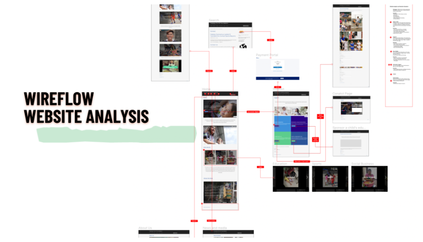
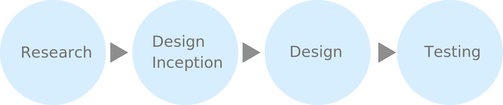
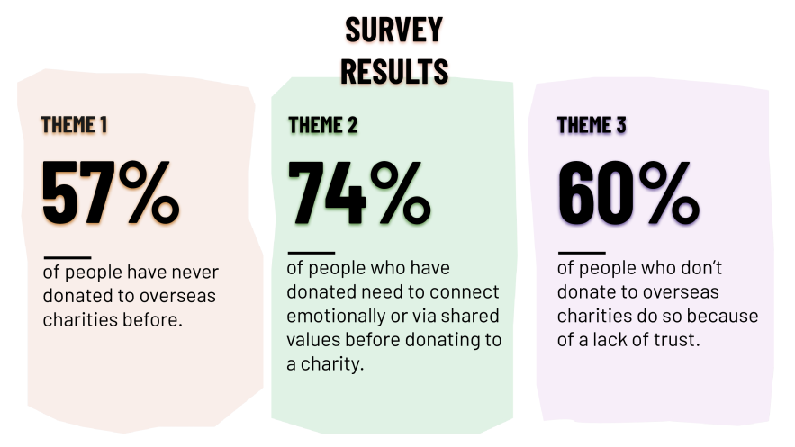
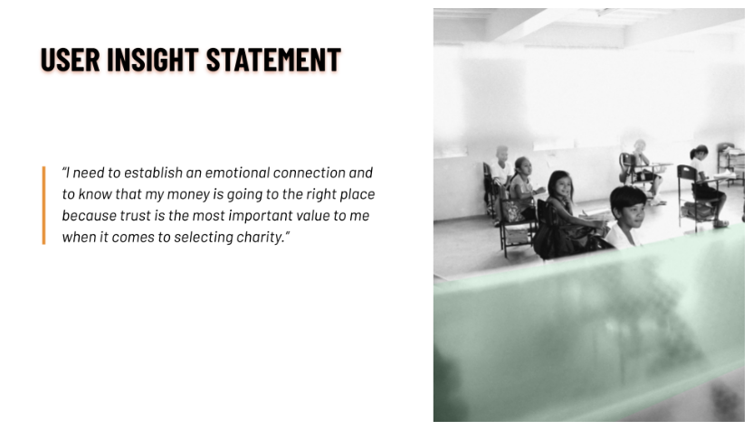
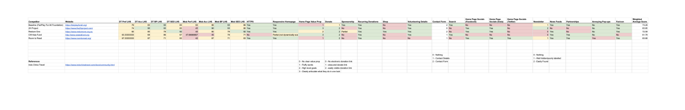
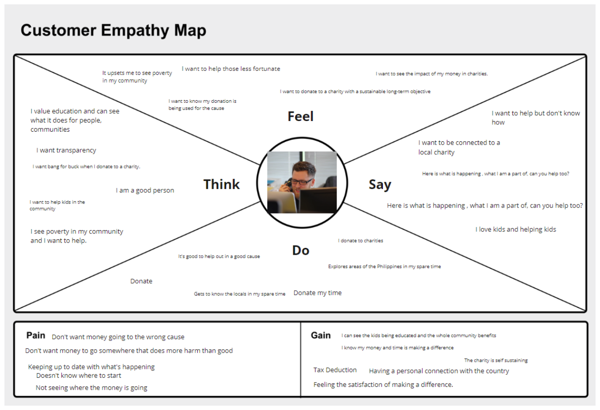

The objective of this project is to do a responsive website re-design for a non-profit organisation.
FairPlay is a non-profit organisation within a small community in Manila, Philippines. They are a school that provides schooling and food for the kids of the Payatas community.
To clarify their major CTA on the website. To increase revenue and volunteer opportunities for the organisation.
To educated themselves on the charity and make a donation or volunteer. User is generally looking to help with the poverty situation in a third world country and make a real, sustainable difference.
Based on an initial heuristic evaluations, the following obvious UX UI principles that are to be applied to increase heuristics.
I was tasked with storyboarding, UX writing, heuristics evaluation, initial competitive analysis, writing problem statement and user insight, empathy maps, user persona, visual design contributions, designing donation sequence, mobile prototype and mobile user testing.
Given the short timeline for completion for this student project, we didn’t have direct access with the stakeholders and had to work off the information we were given. The website was in English. Philippines is a country that speaks Tagalog so we assumed that many of the donates and volunteers are English speaking. We then decided to build our user persona around an Australian expatriate living in the Philippines. Furthermore, we conducted a survey with peers on whether they had donated to an international charity before and if not, why had they not. Here are the survey results:
The Philippines is a country in which there are a high number of smartphone.
Number of smartphone users in the Philippines from 2015 to 2019 with a forecast until 2025 (in millions)
To kick off the definition phrase of this project, we then formulated the following user insight statement based on survey results:
We completed a competitor analysis for other international charities to do with school and children in poverty areas of third-world countries. I was tasked with the research and finding similar charities before another team member finished the competitor’s analysis.
We didn’t have very much information to go by from the stakeholders. Our user persona was built around an expatriate Australian living within the Philippines who is looking to donate to a meaningful charity.
We then built a user persona based on the empathy map.

We then created a story board around the persona for how Cody manages to find the charity and his journey with donating.
1. Donate money 2. Social media links 3. Join the mailing list 4. Get to the 'Education' page 5. Articulate what the charity is about
One the major obstacles with the website is that the UX writing makes it very unclear. This is important as the charity has multiple arms to built a sustainable model to break the poverty cycle for good. These are equally as important. We chose to focus on the school as this is the major part of the charity.
It was necessary to organise all information related to content chunk information pertaining with education on one page etc. Here is the wireframes:

The process went through another round of card sorting afterwards to better re-orientate some of the information.
This is our first prototype. This was designed in conjunction with Justine Carr.
The donation sequence was done by Emma. I had designed the first one but the team wanted to collaborate on quite large number of changes. This is the final product.

Most of the work I had work on here was re-iterating the mobile prototype to match the desktop prototype.

To increase revenue on the page, one the major decisions made during the wireframing stage was to have strong call to cation. This is to donate now and putting the donate button on the front page. And then subsequently creating another landing page for the donate page. We noticed that the website didn’t have a recurring donation button and page. Adding this to the donate page to help increase more donates that are looking to create recurring payments. The second highest action a user can take on the website is to volunteer for the charity.
I was tasked with testing the mobile prototype with a focus on the navigation burger menu with the new information architecture. This was a rapid-fire user test with 5 participants. Response was overall very positive with a success across 5 participants. Here were the test and in the end, the only re-iteration required was to extend the mobile menu across the height of the viewport.
It was very important to iterate design work as team to save time as there is a lot of back and forth. Collaborating live on zoom can enable better communication which can get the prototyping done on time.
I was very lucky to get team members that each individual was very highly organised. Every trello board activity, artefact list, version, folder hygiene, stand up was managed with almost obsessive efficiency which made the project a bit of dream. Everyone knew what their role was each day throughout the project. Pivoting became a lot easier because the crucial daily stand ups were done well.
- Move the secondary footer bar into the black background to avoid confusion
- Further UI visual improvements for the donation page
- Build a Tagalog version of the website
Some quick example text to build on the card title and make up the bulk of the card's content.
Card link Another linkSome quick example text to build on the card title and make up the bulk of the card's content.
Card link Another linkSome quick example text to build on the card title and make up the bulk of the card's content.
Card link Another linkSome quick example text to build on the card title and make up the bulk of the card's content.
Card link Another linkThis is a simple hero unit, a simple jumbotron-style component for calling extra attention to featured content or information.
It uses utility classes for typography and spacing to space content out within the larger container.
Some quick example text to build on the card title and make up the bulk of the card's content.
Some quick example text to build on the card title and make up the bulk of the card's content.
Card link Another link